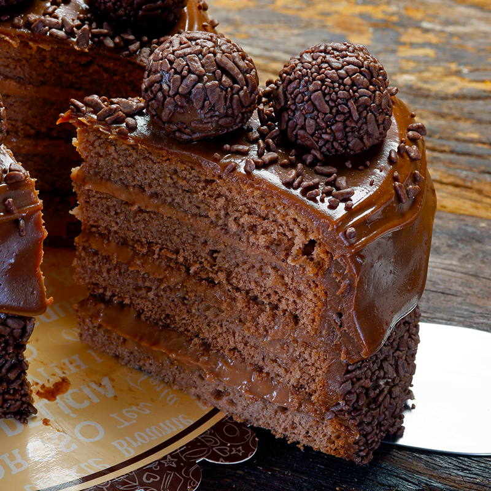
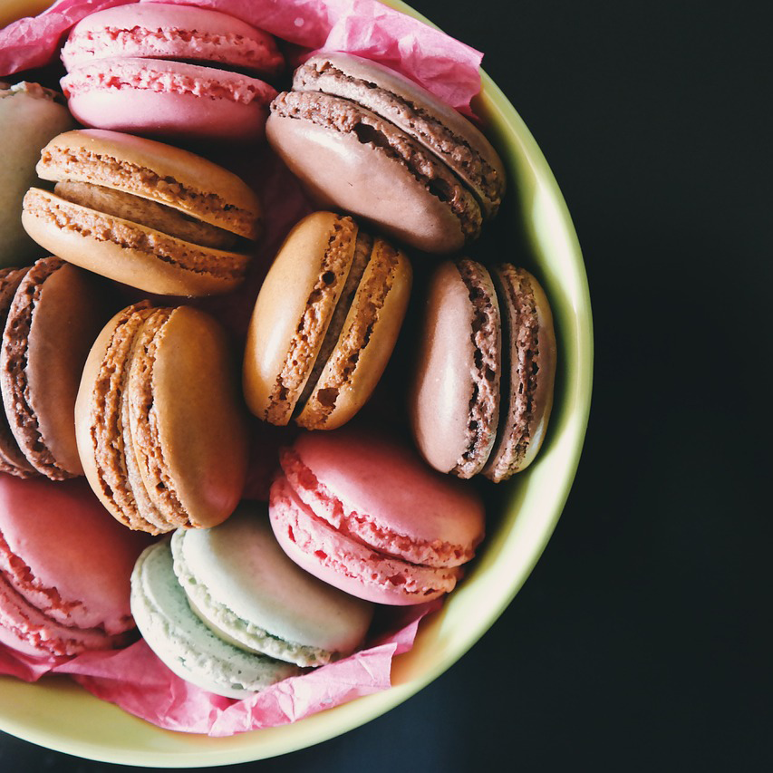
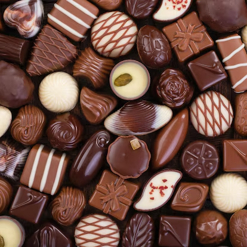
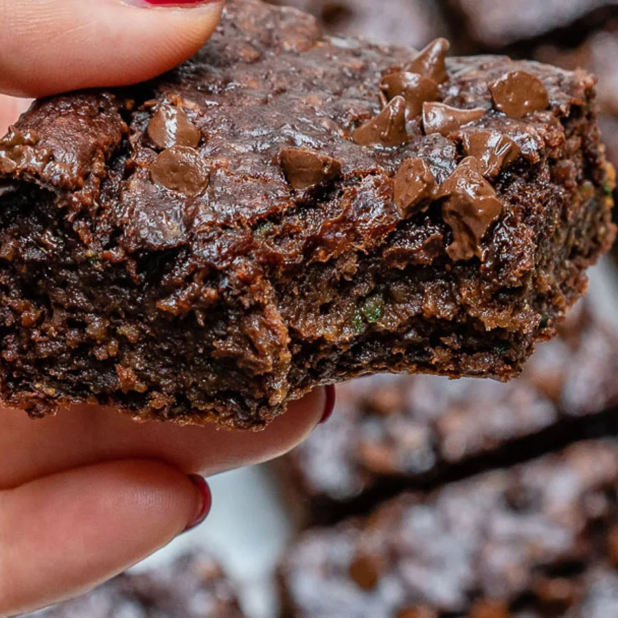

Conheça nossos doces sensacionais:
   Aprenda a fazer uma deliciosa palha italiana!
Para fazer a palha italiana, você vai precisar de ingredientes simples e fáceis de encontrar em casa: leite condensado, biscoito maisena, chocolate em pó e margarina. A receita rende bastante e é muito fácil de fazer. Confira mais!
Festas e Eventos
Prezamos em nossa Doceria pelo sabor dos doces recém preparados, e pelo cuidado em todas as etapas de sua fabricação. Nossa missão é entender a necessidade do cliente, e auxilia-lo da melhor maneira possível desde a escolha dos doces, passando por eventuais adaptações demandadas, até a praticidade e profissionalismo no ato da entrega. Solicite um orçamento.